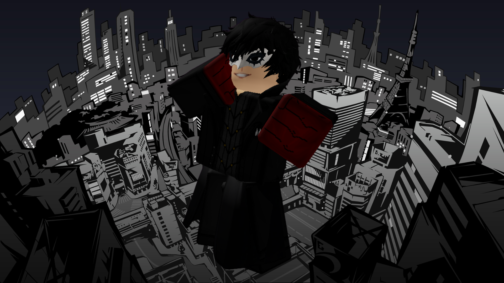

◆ ARCHIVE — HIGH PRIORITY ◆
JOKER
Status: SAFE
Archive Classification: HIGH PRIORITY
Threat Level: UNKNOWN
THIS CONTESTANT KNOWS TOO MUCH
Quote
"The truth always has a way of revealing itself."
Short Bio
Joker is one of the smartest contestants in Anime Showdown Ultimax.
Quiet and observant, he rarely speaks unless he has something important to say. While many contestants focus on surviving challenges, Joker spends much of his time watching the people around him and searching for answers.
The Archive lists Joker as one of the most dangerous contestants on the island.
Not because of his strength...
Because of what he knows.
How They Arrived
Before ASU
Joker was preparing for another Phantom Thieves mission.
Everything had been planned.
The route. The target. The escape.
Then, without warning, reality itself began to fall apart.
The city disappeared. His teammates vanished. Everything went silent.
Arrival
Joker awoke on the island alongside the other contestants.
Unlike everyone else... he immediately realized something was wrong.
The sky. The buildings. Even the air itself... none of it felt real.
While everyone else tried to understand the competition... Joker began investigating the world itself.
Personality
Joker is calm, patient, and extremely intelligent.
He prefers watching people before deciding whether they can be trusted.
Although he rarely shows emotion, he genuinely cares about the people fighting beside him.
His greatest weapon isn't his power.
It's his ability to stay one step ahead.
Current Story
Joker secretly leads the Exit Team.
Together with David, Law, Gyro, and Frieza, he searches for the truth behind Anime Showdown Ultimax.
Every challenge. Every elimination. Every strange event...
Joker believes they're all connected.
He isn't trying to win the competition.
He's trying to end it.
Relationships
Allies
- David Martinez — Joker's closest friend and the person he trusts most.
- Gyro Zeppeli — One of the first contestants to join the Exit Team.
- Law — Joker relies heavily on Law's intelligence when creating plans.
- Frieza — A useful ally. Not necessarily a trusted one.
Rivals
- Adam Smasher — Joker believes Adam is hiding something.
Enemies
- The Host — The one person Joker refuses to stop investigating.
Threat Assessment
Scanning...
Lore
Joker was the first contestant to realize Anime Showdown Ultimax wasn't simply another world.
He discovered inconsistencies throughout the island long before anyone else noticed them.
His investigation eventually led to the creation of the Exit Team.
Recovered Hotlogs suggest Joker has spoken directly to the Host multiple times.
No contestant knows what was said during those conversations.
The Archive contains dozens of corrupted files connected to Joker.
Many cannot be opened. Some disappear entirely.
One hidden Archive note simply reads:
"If Joker learns the truth... the show ends."
Additional Notes
- Founder and leader of the Exit Team.
- First contestant to question the Host.
- Has attempted to access restricted Archive files.
- Rarely trusts anyone immediately.
- Believes there is a way to leave the island without winning.
- The Host has personally monitored Joker since Episode 1.
Keep searching.
VOICE TRANSMISSION
Recovered Archive Recording